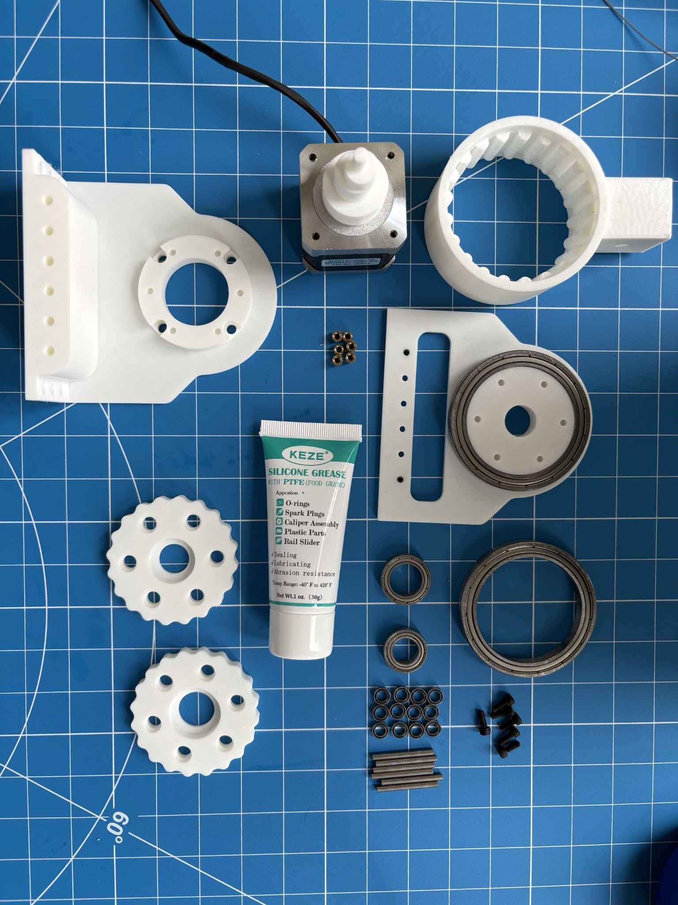
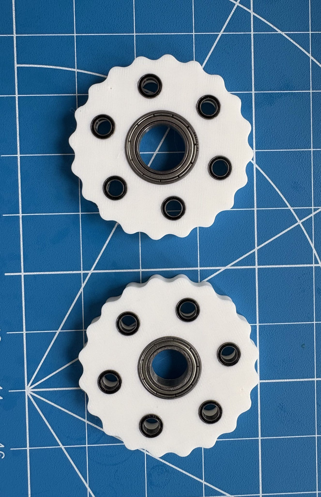
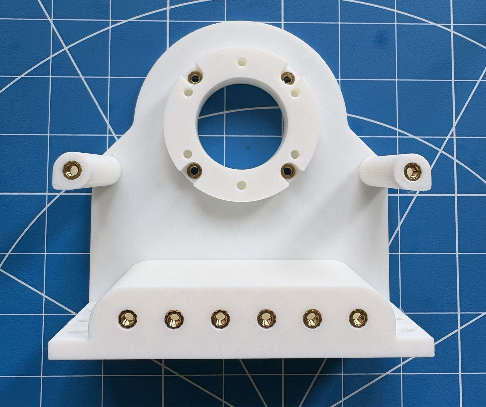
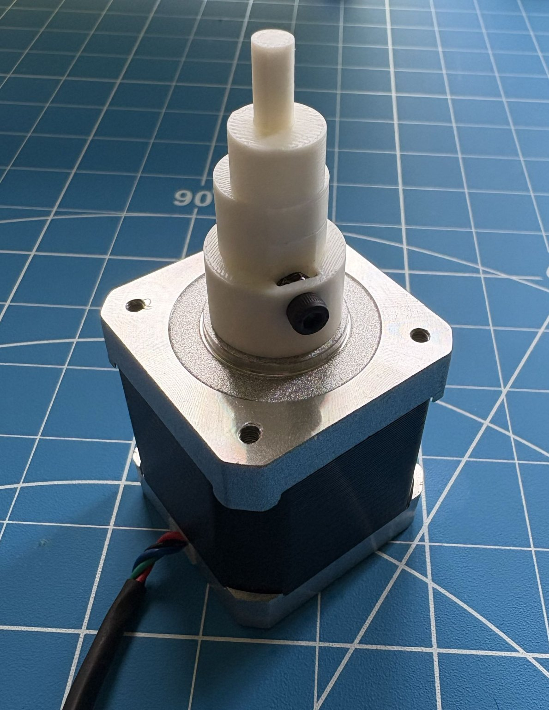
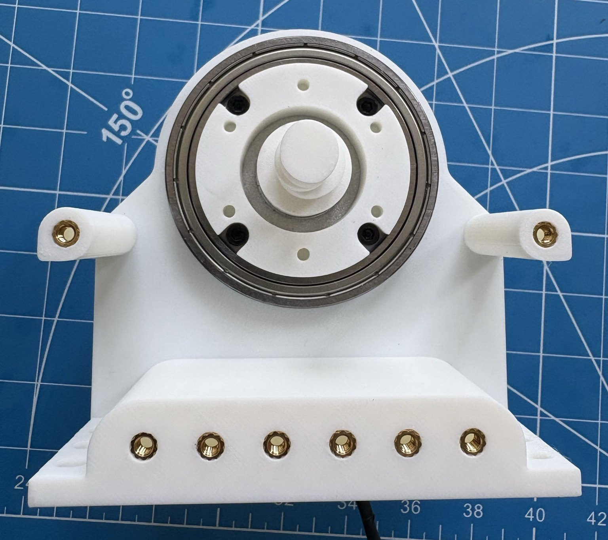
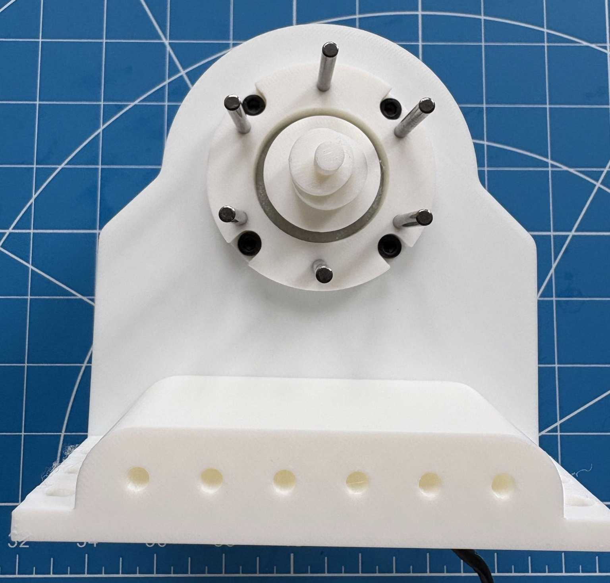
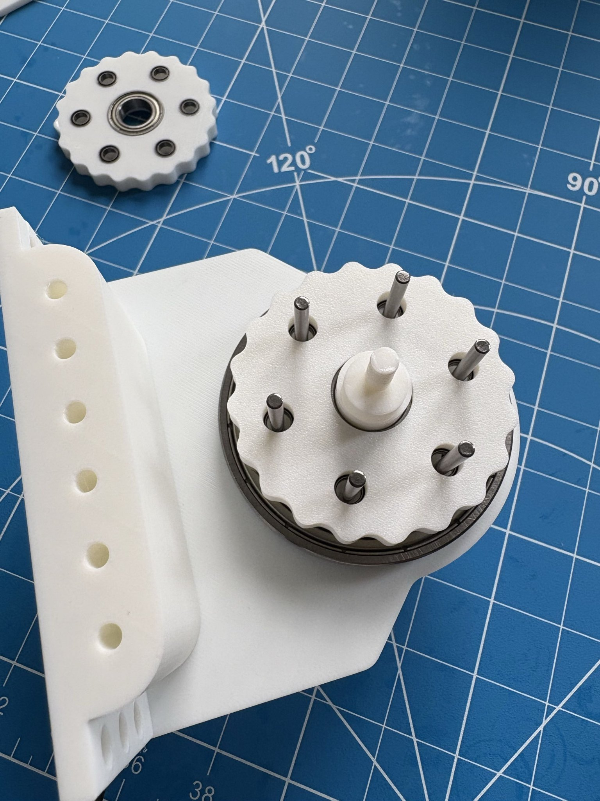
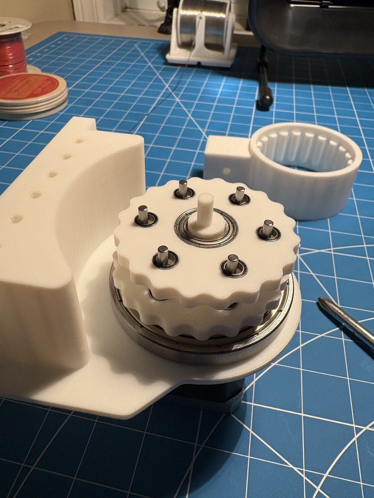
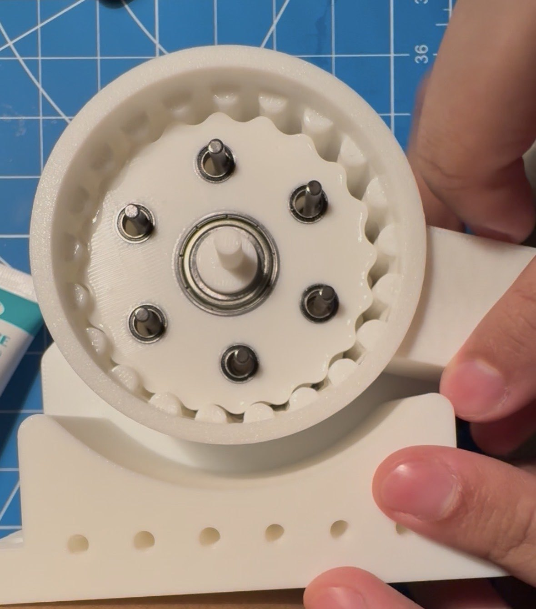
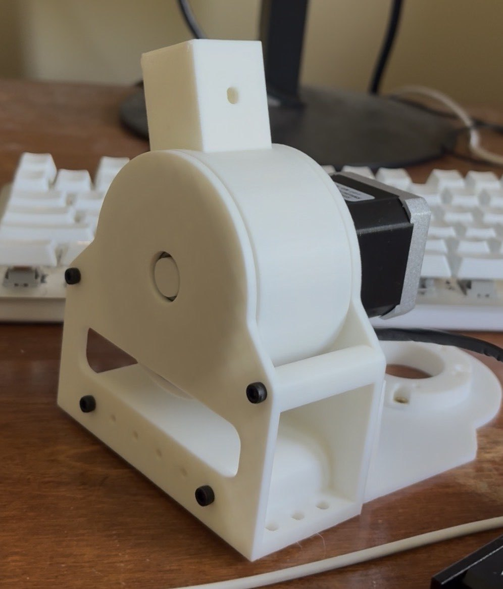

Cycloidal Gearbox Build Guide
Here's the build guide for a 20:1 cycloidal gearbox for a NEMA 17 stepper motor. I made two versions of this gearbox so there are a few continuity errors in the photos, so I hope it's not too hard to follow. The project write-up is on the Cycloidal Gearbox page.
Materials
- 3D printed parts
- 6× 3×30 aluminum dowel pins
- 2× 50×65×7 bearing
- 1× NEMA 17 stepper motor
- M3 heated inserts
- M3 bolts
- 1× 18×27×5 bearing
- 2× 12×21×5 bearing
- Silicon grease

1. Cycloidal discs
Press fit the bearings into the 2 cycloidal discs.

2. Motor plate inserts
Add all the heat set inserts to the motor plate.

3. Input cam
Push in the input cam to the stepper motor. It requires a bit of force.
The photo is from an older version. The current version looks slightly different and does not have a nut. The rest of the photos might switch between them.

4. Motor and first bearing
Use 4 M3 bolts to screw in the motor to the plate and press fit the first 50×65×7 bearing.

5. Dowel pins
Push in the 6 dowel pins. The tolerance needs to be very tight for these so it can be hard to get them in. Make sure they are very straight, otherwise backdrivability can be inhibited.

6. Stack the discs
Add the cycloidal disc with the larger bearing. The bearing should face down. Then add the second cycloidal disc. The bearing faces up in the photo but it should be facing down as well.


7. Outer gear and back plate
The two gears should already be in the right position (180 degrees out of phase). Push in the outer gear and add silicon grease. Then push in the last 50×65×7 bearing and the back plate. Don't test rotation until the back plate is added because it keep the dowel pins centered.


8. Finished
After screwing in some bolts to keep to the backplate the gearbox is done.